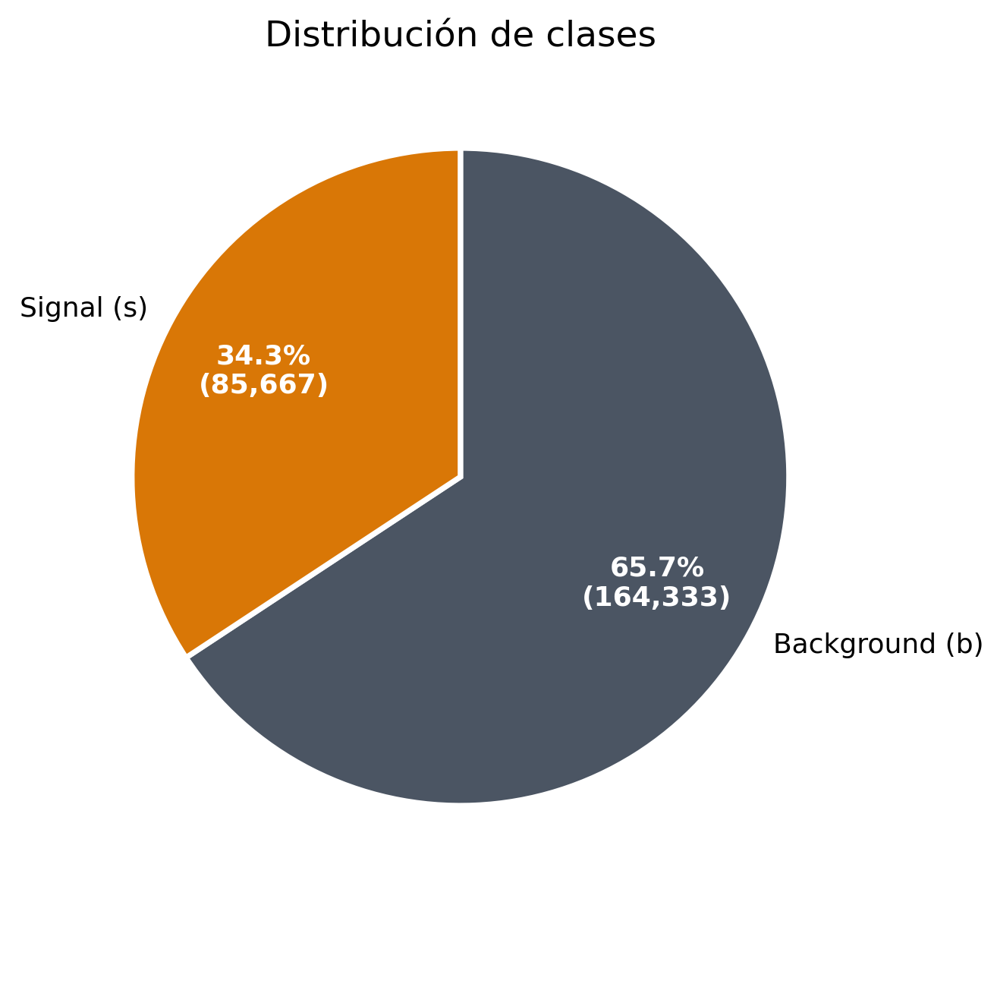
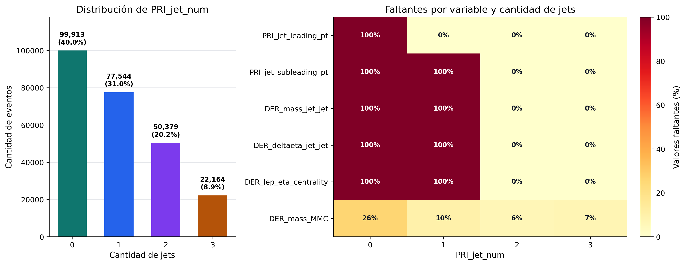
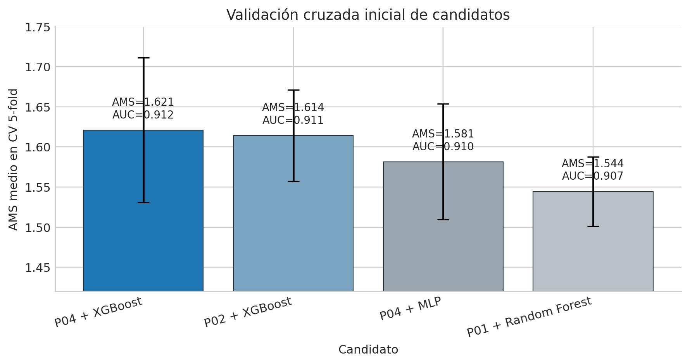
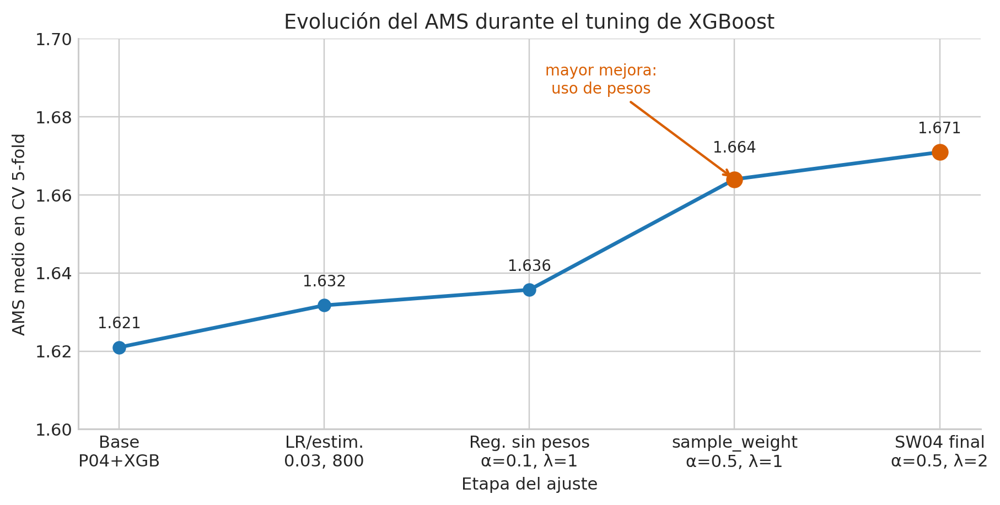
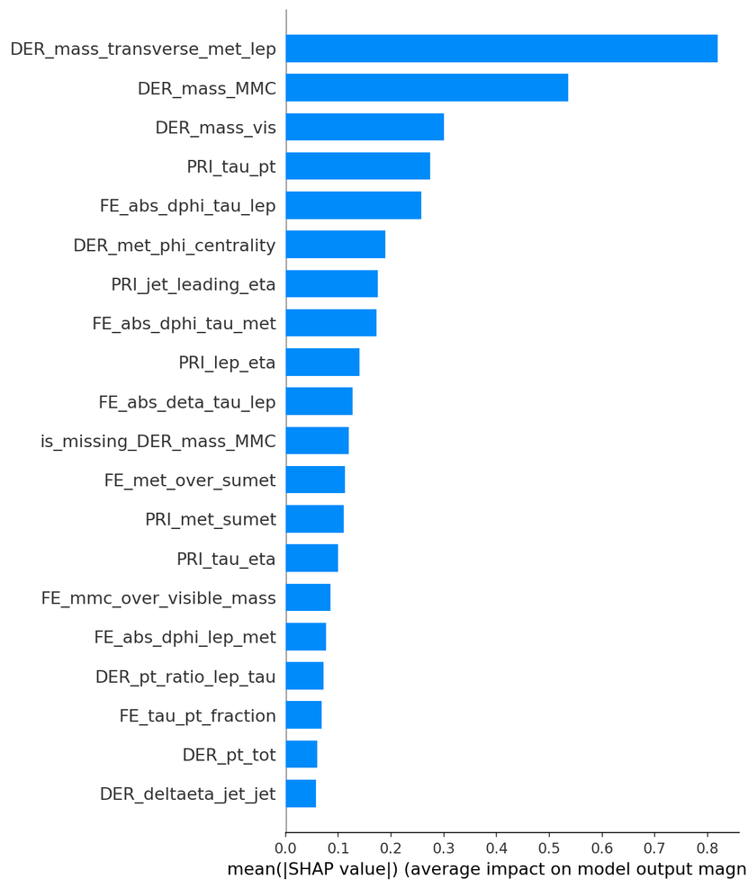
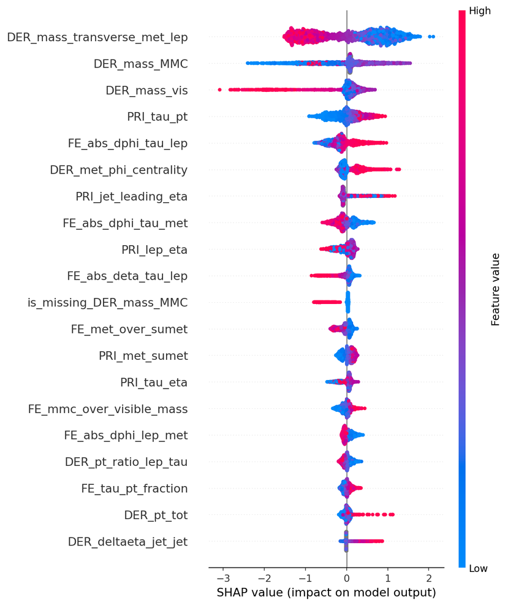

Logistic Regression
Ventajas
- Simple y rápida.
- Fácil de interpretar.
- Buen baseline.
Desventajas
- Limitada para relaciones no lineales.
- Menor desempeño final.
Grupo A
Clasificación supervisada para distinguir señal de fondo en eventos simulados de ATLAS.
Problema y objetivo
Análisis exploratorio

Análisis exploratorio
El valor -999.0 representa variables indefinidas, principalmente asociadas a la cantidad de jets.

Diseño de pipelines
| Pipeline | Incluye | Objetivo |
|---|---|---|
| P00 | Logaritmos, imputación por mediana, StandardScaler e indicadores de faltantes. | Tratar colas largas, agregar información sobre faltantes y estandarizar características. |
| P01 | P00 + one-hot encoding de PRI_jet_num. | Manejo de variables categóricas. |
| P02 | P01 + RobustScaler. | Mitigar el efecto de outliers. |
| P04 | P02 + ingeniería de características físicas. | Agregar información extra desde el preprocesamiento. |
Comparación inicial
Selección de modelos

s: suma de pesos de señales correctas. b: suma de pesos de background seleccionado. breg = 10.
Tuning incremental

El uso de sample_weight durante el entrenamiento alineó el modelo con la métrica AMS.
Configuración final: learning_rate 0.03, 800 estimadores, max_depth 6, reg_alpha 0.5 y reg_lambda 2.0.
Punto de trabajo
La política final es conservadora: sacrifica recall para reducir falsos positivos ponderados.
SHAP values


Las masas reconstruidas (DER_mass_transverse_met_lep, DER_mass_MMC) son las más influyentes; esto valida la lógica física del modelo. También aparece una feature derivada: FE_abs_dphi_tau_lep.
Cierre experimental
Detectamos patrones estructurales (-999 → NaN) y tratamos correctamente los faltantes.
P04 combinó RobustScaler, one-hot e ingeniería física de forma consistente.
XGBoost superó a Logistic Regression, Random Forest y MLP simple en validación cruzada.
sample_weight alineó el entrenamiento con AMS y fue clave para mejorar desempeño.
Con scores OOF elegimos una política conservadora favorable para AMS.
SHAP permitió validar qué variables aportan más y su coherencia física.
Próximas líneas
Verificar distribución de PRI_jet_num entre folds y sensibilidad a particiones.
Usar importancias de XGBoost o SHAP para simplificar el espacio de entrada.
Estudiar falsos positivos y falsos negativos por grupo de jets y tipo de evento.
Retomar modelos o thresholds especializados para eventos con 0, 1 y 2+ jets.
Proyecto 1 · Bosón de Higgs · Grupo A